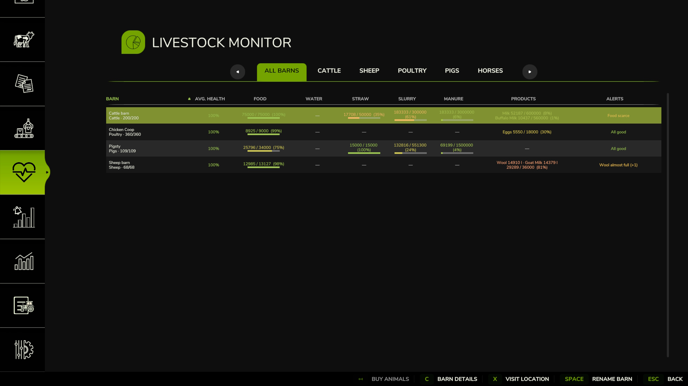
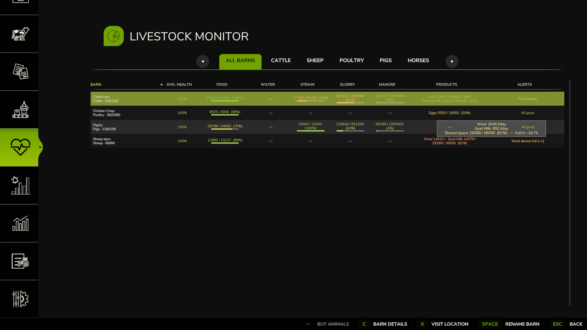
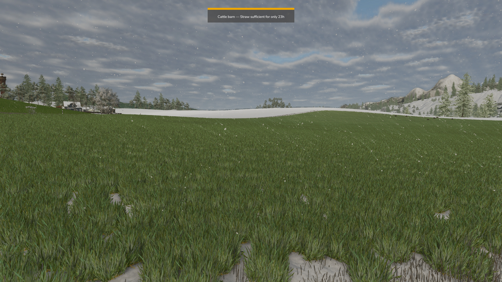
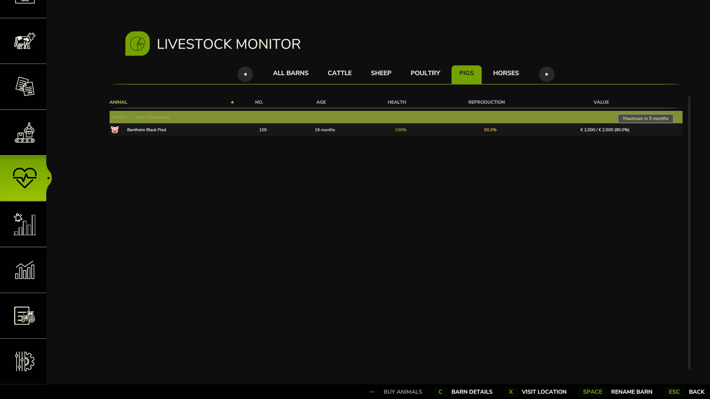
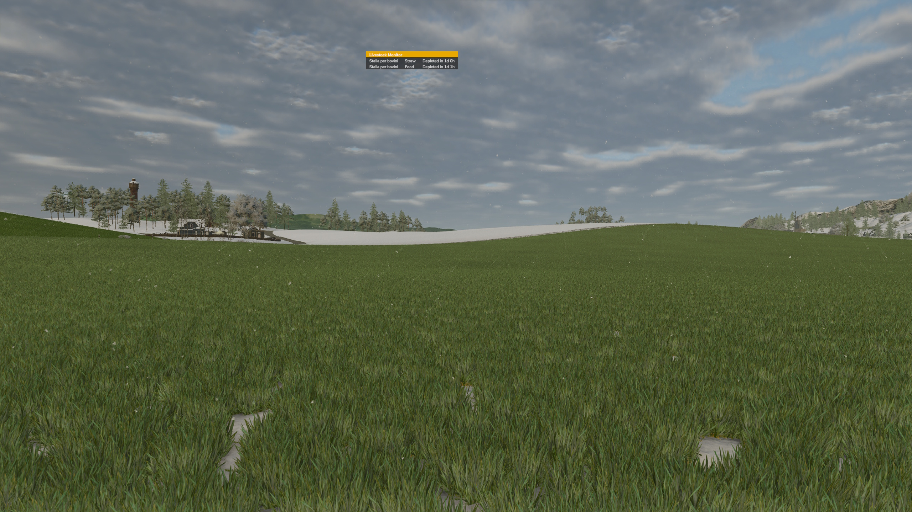
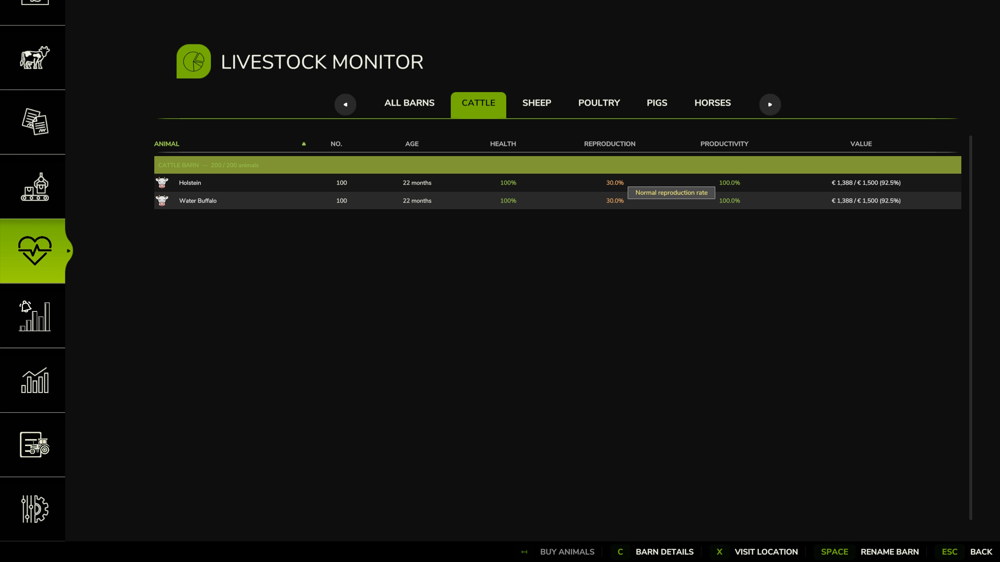

Livestock Monitor Script Mod per FS25
Livestock Monitor — Complete Livestock Management Panel
Livestock Monitor integrates directly into the Farming Simulator 25 in-game menu and gives players a comprehensive, real-time overview of all their livestock barns. Monitor health, food, water, straw, slurry, manure, and production at a glance — and act directly from the panel without ever leaving the interface.
- Full barn overview — Tab 1 shows all barns in a single table with dedicated columns for average health, food, water, straw, slurry, manure, active production, and alerts. Click any row to access rename, visit, buy, sell, and detail actions.
- Per-species tabs — Tabs 2–6 (Cattle, Sheep, Poultry, Pigs, Horses) show individual animal clusters with breed, age, health, reproduction rate, productivity, and sale value. Animals at peak value blink green; aging animals blink red.
- Two display modes — Choose between a draggable HUD panel, always visible on screen with live barn alerts updated every hour, or hourly alert mode, which sends a sound notification and on-screen message whenever a resource reaches a critical level — without keeping any permanent overlay on screen.
- Pre-sleep warning — Before going to sleep, the mod checks all barns and warns you if any resource will run out before you wake up, letting you decide whether to sleep or act first.
- Buy & Sell dialogs — Buy animals directly from the panel with breed, age, and quantity spinners, live price breakdown and transport fee. Sell with quantity selection and net/gross price display.
- Barn Detail dialog — Full breakdown of a single barn: breeds present, production, food detail, extensions (manure heaps, silo extensions) with shared capacity and fill estimates.
- Advanced tooltips — Hover over any cell to see time-remaining estimates, rates, shared storage details, and contextual suggestions.
- In-game settings — Display mode, HUD refresh rate, and sell-signal alerts toggle — all configurable from the standard game settings menu.
Livestock Monitor — Pannello Completo per la Gestione del Bestiame
Livestock Monitor si integra direttamente nel menù di gioco di Farming Simulator 25 e mette a disposizione del giocatore una panoramica completa e in tempo reale di tutte le stalle. Monitora salute, cibo, acqua, paglia, liquami, letame e produzione a colpo d’occhio — e agisci direttamente dal pannello senza mai uscire dall’interfaccia.
- Panoramica di tutte le stalle — Il Tab 1 mostra tutte le stalle in una tabella con colonne dedicate a salute media, cibo, acqua, paglia, liquami, letame, produzione e avvisi. Cliccando su una riga si accede alle azioni di rinomina, visita, acquisto, vendita e dettaglio.
- Tab per specie animale — I tab 2–6 (Bovini, Ovini, Pollame, Suini, Equini) mostrano i singoli cluster di animali con razza, età, salute, tasso di riproduzione, produttività e valore di vendita. Gli animali al valore massimo lampeggiano verde; quelli in declino lampeggiano rosso.
- Due modalità di visualizzazione — Scegli tra il pannello HUD trascinabile, sempre visibile sullo schermo con gli avvisi aggiornati ogni ora, oppure la modalità alert orari, che invia una notifica sonora e un messaggio a schermo ogni volta che una risorsa raggiunge una soglia critica — senza mantenere nessun overlay permanente sullo schermo.
- Avviso pre-dormita — Prima di andare a dormire, la mod controlla tutte le stalle e avvisa se qualche risorsa si esaurirà prima del risveglio, permettendo di decidere se dormire o intervenire prima.
- Dialog acquisto e vendita — Acquista animali direttamente dal pannello con spinner per razza, età e quantità, riepilogo prezzi e tariffa di trasporto in tempo reale. Vendi con selezione della quantità e visualizzazione di prezzo lordo e netto.
- Dialog dettaglio stalla — Riepilogo completo di una singola stalla: razze presenti, produzione, dettaglio cibo, estensioni collegate (concimaie, silo) con capacità condivisa e stime di riempimento.
- Tooltip avanzati — Passando il mouse su qualsiasi cella vengono mostrate stime del tempo rimanente, tassi di consumo/produzione, dettagli sullo spazio condiviso e suggerimenti contestuali.
- Impostazioni nel menù di gioco — Modalità di visualizzazione, frequenza di aggiornamento dell’HUD e toggle per gli avvisi di vendita — tutto configurabile dal menù impostazioni standard del gioco.
Screenshot della Mod in Gioco





